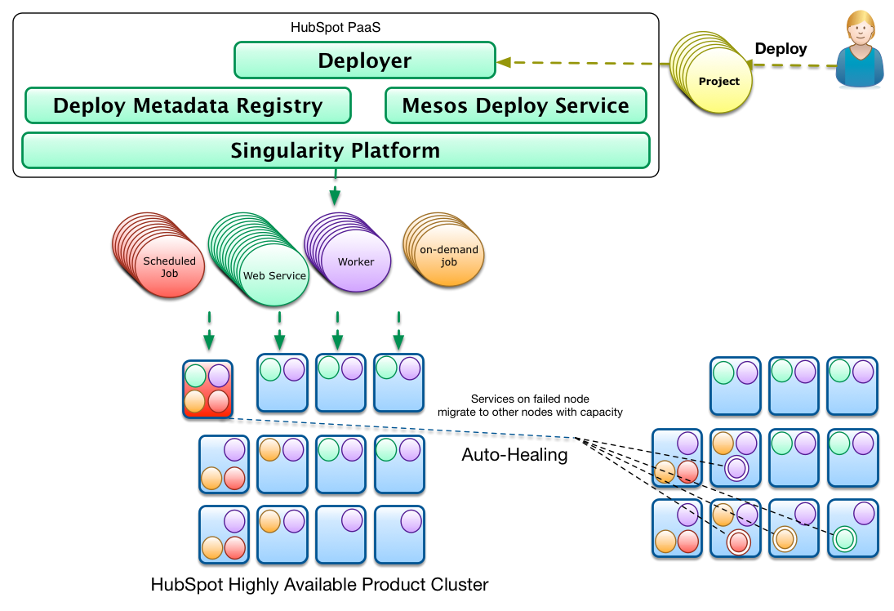
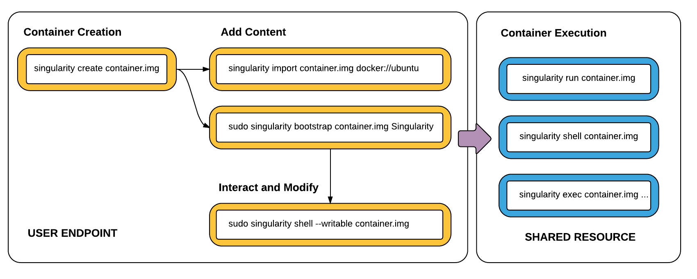

<!doctype html>
<html lang="en">
    <head>
        <meta charset="utf-8">
        <title>reveal-md</title>
        <link rel="stylesheet" href="./css/reveal.css">
        <link rel="stylesheet" href="./css/theme/black.css" id="theme">
        <link rel="stylesheet" href="./css/highlight/zenburn.css">
        <link rel="stylesheet" href="./css/print/paper.css" type="text/css" media="print">
          <link rel="stylesheet" href="./assets/asciinema-player.css">

		<script>
		  document.write('<script src="http://' + (location.host || 'localhost').split(':')[0] +
		  ':35729/livereload.js?snipver=1"></' + 'script>')
		</script>
    </head>
    <body>

        <div class="reveal">
            <div class="slides"><section ><section data-markdown><script type="text/template">#  Running Docker on SURFsara's HPC systems with Singularity 


</script></section><section data-markdown><script type="text/template">


Let's breakdown the title
</script></section><section data-markdown><script type="text/template">
Running Docker <strike>on SURFsara's HPC systems with Singularity</strike>

</script></section><section data-markdown><script type="text/template">
 <strike> Running Docker on </strike>SURFsara <strike>'s HPC systems with Singularity</strike>
</script></section><section data-markdown><script type="text/template">
 <strike> Running Docker on SURFsara's  </strike> HPC systems <strike> with Singularity</strike>
</script></section><section data-markdown><script type="text/template">
 <strike> Running Docker on SURFsara's  HPC systems  with</strike>  Singularity 
 
----


## I will not talk about

</script></section><section data-markdown><script type="text/template">

</script></section><section data-markdown><script type="text/template">

</script></section></section><section  data-markdown><script type="text/template">


## I will talk about


---
</script></section><section  data-markdown><script type="text/template">
## About Me

- Name: Maarten Kooyman
- MSc Bioinformatics + MSc Genetic Epidemiology
- Working for 3 years at SURFsara Distributed Data-processing Group
- Technical lead for ProjectMinE@SURFsara
- 2 children + wife
- 34 years


</script></section><section  data-markdown><script type="text/template">

## Structure of this Talk

- Why Containers ?
- Why Singularity ?
- A real life use case
- Use Cases Singularity
- Singularity at SURFsara
- Acknowledgements
</script></section><section ><section data-markdown><script type="text/template">

## Containers
</script></section><section data-markdown><script type="text/template">
# Why Containers?
</script></section><section data-markdown><script type="text/template">
Reproducibility
</script></section><section data-markdown><script type="text/template">
Portability
</script></section><section data-markdown><script type="text/template">
Easy to use
</script></section></section><section ><section data-markdown><script type="text/template">
# Why Singularity ?
</script></section><section data-markdown><script type="text/template">
Right tool for the right job.
</script></section><section data-markdown><script type="text/template">

Biggest ecosphere
</script></section></section><section ><section data-markdown><script type="text/template">

# A real life use case

</script></section><section data-markdown><script type="text/template">
Expansionhunter


- a tool for estimating repeat sizes

- gcc/cmake/boost build dependencies

- made a bioconda package &#127878; 


</script></section><section data-markdown><script type="text/template">

- New version needs gcc >= 4.9
- conda supports 4.8

Solutions:

- compile gcc 4.9 self inside conda 🐉

- use LVMM

- Use a container
</script></section><section data-markdown><script type="text/template">
 
## Dockerfile

Used Alpine linux: distro made for container

- small and up-to-date
 
- fun (something else then Debian or CentOS)

```
FROM alpine:3.6
RUN apk add --no-cache build-base boost boost-dev cmake gcc git zlib-dev zlib 
RUN git clone https://github.com/Illumina/ExpansionHunter.git &&  cd ExpansionHunter &&  mkdir build && cd build && cmake .. && make  && mv ExpansionHunter /usr/bin/. && cd / && rm -rf ExpansionHunter 
RUN apk del build-base cmake gcc git zlib-dev

ENTRYPOINT ["ExpansionHunter"]
CMD ["--help"]
```
</script></section><section data-markdown><script type="text/template">
## Docker Build ☕ and run
<asciinema-player start-at="7" src="dockerbuild.json"></asciinema-player> 

</script></section><section data-markdown><script type="text/template">

## Install singularity
<asciinema-player src="02install_singulariy.json"></asciinema-player>

</script></section><section data-markdown><script type="text/template">

## Convert Docker to Singularity (local)
<asciinema-player src="03convertlocal2sing.json"></asciinema-player> 

</script></section><section data-markdown><script type="text/template">

## Convert Docker to Singularity (dockerhub)
<asciinema-player src="04converthub2sing.json"></asciinema-player> 


</script></section><section data-markdown><script type="text/template">

## Use shell in the image 
<asciinema-player src="05singshell1.json"></asciinema-player> 

</script></section><section data-markdown><script type="text/template">
## use shell in the image (ad-hoc changes)

<asciinema-player src="06singshell2.json"></asciinema-player> 

</script></section><section data-markdown><script type="text/template">

## Upload your image to a resource

<asciinema-player src="07upload.json"></asciinema-player>
</script></section><section data-markdown><script type="text/template">



</script></section></section><section ><section data-markdown><script type="text/template">


# Use cases

- Sysadmin
- Developer
- Scientist
- GPU
- Gamer
</script></section><section data-markdown><script type="text/template">
## Sysadmin


containerize program called hard


```
#!/bin/bash

singularity exec -pwd $PWD prog/with/impossible/deps/hard.img $@
```

- copy script to /usr/local/bin/hard 
- user can just call hard without any knowledge of containers

</script></section><section data-markdown><script type="text/template">

## Developer

- Go crazy with dependencies
- Forget about deb and yum packages
- No more "how do I install" Q's
- Join the "Works on My Machine" Certification Program


</script></section><section data-markdown><script type="text/template">
## Scientist

- Reproducibility : international collabs
- Reproducibility : produce same results over a year time
- No need to nag a sysadmin (reduces costs of chocolate/beer/coffee/cake/* )
- More time to focus on science

</script></section><section data-markdown><script type="text/template">
## GPU

Easy to install suites like:

- caffe-gpu
- tensorflow-gpu

Plays also well with MPI
</script></section><section data-markdown><script type="text/template">
## Gamer

- X Window System works out of the box
- Wine already works: http://dolmades.org/
- Fill in Windows Excel only spreadsheets
- scientific programs: MaxQuant?


</script></section></section><section ><section data-markdown><script type="text/template">
# Singularity at SURFsara


</script></section><section data-markdown><script type="text/template">

## On all batch systems
- Life Science grid
- Gina (Grid@surfsara)
- Lisa
- Grid@nikhef
- Carthesius

- More than 70000 cores, 2 petabyte of memory and 2800 nodes
</script></section><section data-markdown><script type="text/template">

## generic instructions and setup


- One image to rule them all!
- setup uniform
- Follow "latest greatest" upgrade policy for now: no guarantee for future.
- Information can be found on https://userinfo.surfsara.nl/ 


</script></section><section data-markdown><script type="text/template">

## But when?

Now on GinA and LSG, next week on the other systems 


</script></section><section data-markdown><script type="text/template">

## Helpdesk

- In start phase a taks force handles question
- contact via helpdesk@surfsara.nl
- Improve documentation/FAQ/setup

</script></section></section><section  data-markdown><script type="text/template">


## Acknowledgements


- Valeriu Codreanu
- Michel Scheerman
- Luuk Uljee
- Bas van de Vlies
- Dennis van der Dok (Nikhef)
- Maarten van Ingen
- Nuno Ferreira
- Jeroen Schot

- Raymond Oonk and Alex Mechev (LOFAR)
</script></section><section  data-markdown><script type="text/template">
# Hidden agenda

- Less need HPCCloud: 
	- less time on system administration
	- More time in science
	- scheduling jobs is resource wise more efficient than cloud*
- Make software independent of infrastructure
- Choose infrastructure based on their hardware requirements, not software requirements
- next step: make data independent of hardware: S3/swift

</script></section><section  data-markdown><script type="text/template">

# problems?

```$PATH``` is outside and inside the container the same


```
gcc -march=native
```


</script></section></div>
        </div>

        <script src="./lib/js/head.min.js"></script>
        <script src="./js/reveal.js"></script>

        <script>
            function extend() {
              var target = {};
              for (var i = 0; i < arguments.length; i++) {
                var source = arguments[i];
                for (var key in source) {
                  if (source.hasOwnProperty(key)) {
                    target[key] = source[key];
                  }
                }
              }
              return target;
            }

            // Optional libraries used to extend on reveal.js
            var deps = [
              { src: './lib/js/classList.js', condition: function() { return !document.body.classList; } },
              { src: './plugin/markdown/marked.js', condition: function() { return !!document.querySelector('[data-markdown]'); } },
              { src: './plugin/markdown/markdown.js', condition: function() { return !!document.querySelector('[data-markdown]'); } },
              { src: './plugin/highlight/highlight.js', async: true, callback: function() { hljs.initHighlightingOnLoad(); } },
              { src: './plugin/zoom-js/zoom.js', async: true },
              { src: './plugin/notes/notes.js', async: true },
              { src: './plugin/math/math.js', async: true }
            ];

            // default options to init reveal.js
            var defaultOptions = {
              controls: true,
              progress: true,
              history: true,
              center: true,
              transition: 'default', // none/fade/slide/convex/concave/zoom
              dependencies: deps
            };

            // options from URL query string
            var queryOptions = Reveal.getQueryHash() || {};

            var options = {};
            options = extend(defaultOptions, options, queryOptions);
        </script>

          <script src="./assets/node_modules/reveal.js-menu/menu.js"></script>
          <script src="./assets/asciinema-player.js"></script>

        <script>
            Reveal.initialize(options);
        </script>
    </body>
</html>
